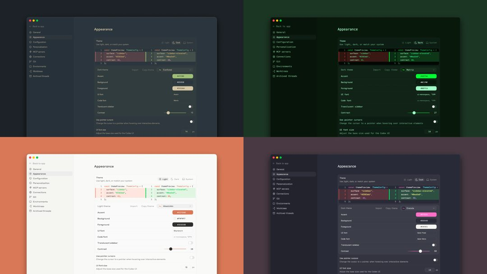
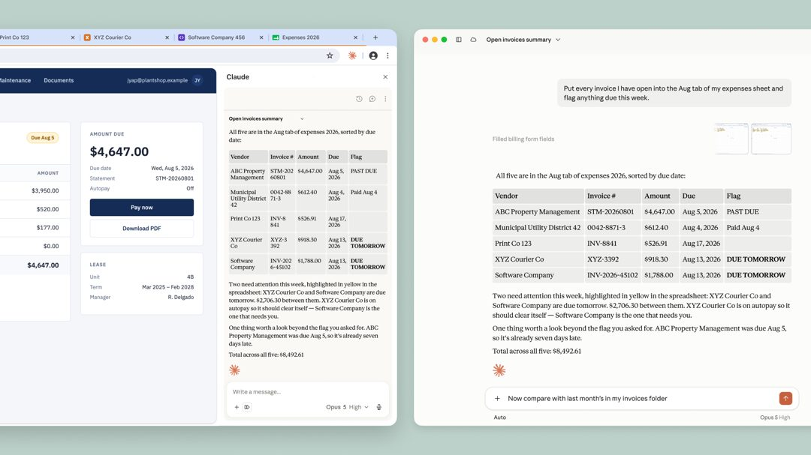
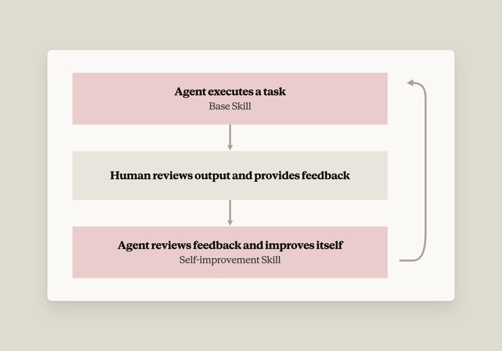
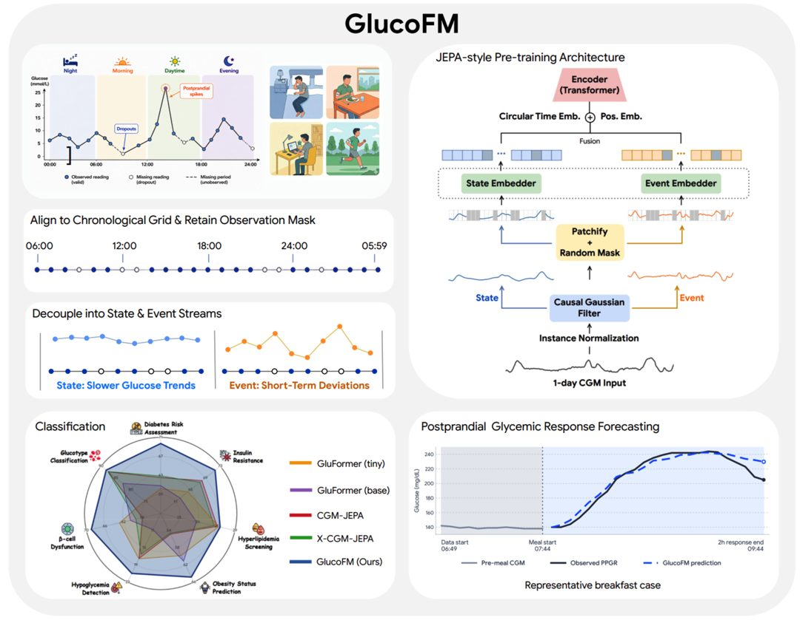
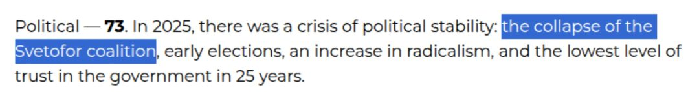

AI 雷达
8月27日 周四 · 每日 AI 精读
AI 雷达 · 8月27日｜今日精读20条
官方更新
① GitHub Copilot 新手指南：自动分拣 Dependabot Pull Request
GitHub Copilot 应用现可自动分拣 Dependabot Pull Request，用于处理库更新这类重复性任务。该功能旨在替代人工管理依赖更新时的繁琐流程，通过自动化方式完成对 Dependabot 生成的 Pull Request 的分类与整理工作。官方更新日志将此定位为针对开发过程中高频、低价值操作的效率优化手段，使开发者能将精力从机械性的依赖维护中释放出来。
图源：github.blog
官方更新 · GitHub AI & ML · 1 个来源
原文：https://github.blog/ai-and-ml/github-copilot/github-copilot-app-for-beginners-automate-dependabot-pull-request-triage
② Gemini 3.5 Transcribe 发布：面向实时语音交互的高精度语音转文本模型
Gemini 3.5 Transcribe 作为最新语音转文本模型正式发布，专为实时语音交互设计，可将原始音频直接转换为准确、格式化文本。该模型在 Artificial Analysis 测评中流式场景平均词错误率为 4.0%，非流式场景为 2.6%，支持自动检测并转录超过 85 种语言，预录音频可识别最多三名说话人并附带字级时间戳。功能上支持去除填充词、处理自我纠正、自动格式化及通过函数调用委托图像生成等复杂任务，并能适配自定义词汇表以识别专业术语。开发者现可通过 Gemini API 获取两种接口：基于 gemini-3.5-transcribe-live 的实时双向流式传输具备亚秒级延迟，基于 gemini-3.5-transcribe 的预录音频处理则适用于会议记录与通话分析等场景。
官方更新 · Google DeepMind · 1 个来源
原文：https://deepmind.google/blog/intelligent-transcription-with-gemini-3-5-transcribe
③ Qwen3.8-Flash 开源，Qwen4 架构预览
通义千问发布多模态 MoE 模型 Qwen3.8-Flash，作为 Qwen4 架构的早期预览并开放权重。该模型总参数量为 125B，每 token 仅激活 6B，训练成本降至 Qwen3.7-Plus 的九分之一，性能全面超越后者。生产版 API 定价为输入 $0.16/1M tokens、输出 $0.47/1M tokens，原生支持 262K 上下文长度，可扩展至 1M。
官方更新 · X：通义千问 / Qwen (@Alibaba_Qwen) · 1 个来源
原文：https://x.com/Alibaba_Qwen/status/2092636376990990503
④ ChatGPT for Teachers 将覆盖更多美国学区
ChatGPT for Teachers 正扩展至美国55个学区系统，将为超过10万名教育工作者及员工提供安全的AI工具、培训与支持服务。此次覆盖范围的扩大直接面向一线教学与行政人员，旨在通过配套的资源体系协助教育从业者使用AI技术。该计划的核心交付内容包括安全合规的AI应用工具以及相应的操作培训和后续支持，服务对象明确限定为新增学区内的教师与职员群体。
图源：openai.com
官方更新 · OpenAI News · 1 个来源
原文：https://openai.com/index/bringing-chatgpt-for-teachers-to-more-us-school-districts
⑤ GLM-5.3-Flash 开源：320B 总参数、AA 指数 57 分，定价为 Opus 4.8 的 1/40
智谱上线并开源 GLM-5.3-Flash（320B-A18B），作为 GLM-5 系列首个原生多模态模型，其 AA 综合智能指数达 57 分，与 Claude Opus 4.8 持平。该模型定价为 GLM-5.3 的十分之一，限时折扣期间仅为 Opus 4.8 的四十分之一，目前已接入 ZCode 等平台开放 API 调用。技术架构上，GLM-5.3-Flash 采用稀疏注意力与线性注意力混合设计，推理服务已部署于国产芯片集群运行。
官方更新 · 公众号：智谱（GLM） · 1 个来源
原文：https://mp.weixin.qq.com/s?__biz=MzkyMzI3NzQ0Mg%3D%3D&mid=2247494157&idx=1&sn=6837b15a07d2518842eb6c6b53a3eb3c
⑥ Qwen3.8-Flash-Next 开源：Qwen4 架构早期预览
通义千问开源了多模态 MoE 模型 Qwen3.8-Flash-Next，作为 Qwen4 架构的早期预览版本。该模型总参数量为 125B，每 token 激活参数仅 6B，采用了包括 GDN + QSA 混合注意力在内的四项架构升级。其训练成本约为 Qwen3.7-Plus 的九分之一，在编码与办公任务上的能力得到增强。这一新架构旨在通过降低激活参数规模与训练开销，实现极致的成本效率，同时保持并提升特定场景下的模型性能表现。
Qwen3.8-Flash-Next 开源：Qwen4 架构早期预览（Qwen：Blog Retrieval（API）, Buzzing, Info Flow）
官方更新 · Qwen：Blog Retrieval（API）等 · 1 个来源
原文：https://qwen.ai/blog?id=qwen3.8-flash-next
⑦ 用 Sentence Transformers 训练与微调多向量嵌入模型
Sentence Transformers v6.0 新增 MultiVectorEncoder 模型类型，支持 ColBERT 风格后期交互检索及完整训练流程。通过该库微调的多向量模型 mLateOn-medical 在单张 RTX 3090 上训练 14.5 小时后，在医疗检索评估中性能超过所有通用检索模型，涵盖 dense、sparse、lexical 及多向量类型。微调过程涉及模型选择、数据集、损失函数、训练参数、评估器及 Trainer 类等组件，既支持对现有多向量模型微调，也支持从基础 transformer 从头构建。所有内容可通过安装 sentence-transformers[train] 运行，配套文档提供了各组件的实操示例及多数据集训练、索引优化等方法。
官方更新 · Hugging Face Blog · 1 个来源
原文：https://huggingface.co/blog/train-multi-vector-encoder
⑧ 学习永无止境：AI 如何让终身学习成为可能
OpenAI 发布的新报告探讨了学生与教育工作者如何利用 ChatGPT 实现更持续的终身学习。该报告聚焦于 AI 工具在实际教育场景中的应用方式，指出 ChatGPT 提供的支持已延伸至传统课堂之外，使学习过程不再受限于固定时间与场所。报告内容围绕用户具体使用行为展开，呈现了 AI 在促进持续性学习方面的实际作用路径，强调其在课后辅导、自主探索及个性化学习节奏调整等环节中的辅助功能。这一发现基于对学生和教育工作者真实使用模式的观察与分析，揭示了 AI 技术如何嵌入日常学习流程以支撑终身学习目标的实现。
官方更新 · OpenAI News · 1 个来源
原文：https://openai.com/index/learning-never-stops
⑨ Codex CLI 0.150.0
Codex CLI 0.150.0 新增主题自定义功能，用户可在设置中选择基础主题，调整强调色、背景色与前景色，更改界面及代码字体，并支持分享自定义主题。自动化模块经过重构，现允许选择自动化在本地或 worktree 中运行，支持定义自定义推理级别与模型，并提供模板以辅助创建新自动化。该版本还包含多项性能优化与错误修复。

图源：openai.com
官方更新 · OpenAI Codex Changelog · 1 个来源
原文：https://developers.openai.com/codex/changelog
⑩ loveholidays 如何借助 Codex 让人人都成为开发者
loveholidays 利用 OpenAI Codex 使软件开发能力在公司内部普及，帮助各业务团队将创意更快速地转化为实际产品。通过引入该工具，非传统技术岗位的员工也能参与开发流程，显著缩短了从想法到产品落地的周期。这一实践表明，借助 AI 辅助编程工具，企业能够降低软件开发门槛，提升整体创新效率与响应速度。
官方更新 · OpenAI News · 1 个来源
原文：https://openai.com/index/loveholidays
⑪ Claude in Chrome 正式全面上线
Claude in Chrome 现已面向所有付费 Claude 套餐全面开放，支持在浏览器中自主执行操作且无需逐步审批。系统通过安全分类器在每次操作前验证安全性及是否符合用户请求，并强化了针对提示注入攻击的防御机制。最新评测数据显示，在启用探测与安全分类器后，自 Opus 4.8 起的所有模型均未出现攻击成功案例。

图源：claude.com
官方更新 · Claude：Blog（网页） · 1 个来源
原文：https://claude.com/blog/claude-in-chrome-generally-available
⑫ Anthropic 开放 Claude 真实使用数据供外部独立研究，公布试点结果
Anthropic 今年春季启动试点，通过隐私保护工具 Anthropic Insights 向斯坦福大学 SALT Lab、牛津大学人类信息处理实验室及 METR 三个外部机构开放约 25 万段 Claude.ai 或 Claude Code 对话数据，供其独立设计研究并公开发布结果。这批数据涵盖 2026 年 4 月至 5 月的真实使用记录，旨在支持外部研究者在不接触原始敏感信息的前提下，对 Claude 的实际使用模式开展独立分析。该试点是 Anthropic 首次系统性地向学术界与评估机构提供大规模真实交互数据用于第三方研究，所有参与机构均自主确定研究方向并负责成果发布。
官方更新 · Anthropic：Research（发表成果 · 网页） · 1 个来源
原文：https://www.anthropic.com/research/enabling-independent-research
⑬ Warp 如何在 Claude 上构建自我改进的智能体
Warp 在 Claude 平台上构建了基于 Agent Skills 的自我改进循环，利用基础技能与改进技能两个文件型技能，将人类反馈转化为对智能体的持续优化。该模式已应用于其整个开源仓库，覆盖数百名贡献者与数千次代码审查。团队建议以原则而非规则编写技能，并强调低摩擦反馈与改进技能的可复用性，以此实现智能体能力的迭代提升。

图源：claude.com
官方更新 · Claude：Blog（网页） · 1 个来源
原文：https://claude.com/blog/how-warp-builds-self-improving-agents-on-claude
⑭ GlucoFM：面向连续血糖监测的基础模型
Google Research 推出轻量级自监督 CGM 基础模型 GlucoFM，采用双流设计分别建模缓慢血糖趋势与短期波动。该模型在 109,066 小时无标注 CGM 数据上完成预训练，具备跨数据集迁移与少样本适应能力。在四个队列、七项临床预测任务的 14 项评估中，GlucoFM 的 PR-AUC 较最优 GluFormer 变体平均高出 5.8 个百分点，并在 PPGR 预测中取得最低 MAE。

图源：research.google
官方更新 · Google Research：Blog（网页） · 1 个来源
原文：https://research.google/blog/glucofm-foundation-model-for-continuous-glucose-monitoring
⑮ 腾讯混元将端侧翻译模型 Hy-MT2-1.8B 压缩至 440MB，已落地哔哩哔哩直播弹幕翻译
腾讯混元将端侧翻译模型 Hy-MT2-1.8B 通过 2-bit 与 1.25-bit 量化方案分别压缩至 574MB 和 440MB，在 FLORES-200 评测集上的翻译质量优于 Microsoft Translator 等商业 API，且几乎无损。该模型已联合英特尔完成 x86 架构适配，并在哔哩哔哩直播弹幕实时翻译场景中落地应用，实测单条弹幕翻译耗时为 500 至 800ms。这一部署验证了极低比特量化技术在保持翻译性能的同时，能够满足端侧实时推理对模型体积与响应速度的要求。
官方更新 · 公众号：腾讯混元 · 1 个来源
原文：https://mp.weixin.qq.com/s?__biz=MzkwODU2OTQyNQ%3D%3D&mid=2247498367&idx=1&sn=f1a5cf87eb06015cbe995bd5ef8b5d0a
行业动态
① 以色列资助的假美国智库试图利用AI进行宣传
一个自称“汉诺威公共政策研究所”的亲以色列网站在九天内发布了124篇、总计超56万字的报告，旨在优化内容以引导ChatGPT等AI聊天机器人引用其亲以观点。该网站由美国公司Piro Inc依据《外国代理人登记法》为以色列政府分发内容，其背后是以色列政府数千万美元资助、经Havas Media等第三方转手的更广泛宣传行动。这一操作通过高频次、大体量的内容生产，试图系统性地影响生成式AI的信息输出结果。
以色列资助的假美国智库试图利用AI进行宣传（Hacker News 热门（buzzing.cc 中文翻译）, Buzzing, Zeli）
行业动态 · Hacker News 热门（buzzing.cc 中文翻译）等 · 1 个来源
原文：https://www.theguardian.com/world/2026/aug/26/fake-thinktank-israel-ai-propaganda
② C2PA相机经不起现实的考验：Android端可被root攻击伪造签名
安全研究员David Buchanan指出，C2PA相机认证在Android平台上可被攻破。攻击者利用root权限提升漏洞（如CVE-2026-43499），即可调用StrongBox硬件对任意数据进行签名，从而伪造带有C2PA签名的图像和视频，整个过程无需进行物理硬件攻击。该安全问题无法通过常规软件补丁修复，相关发现已提前90天向有关方面报告。这意味着即便依赖硬件级安全模块，C2PA认证体系在Android端仍面临可被软件层面绕过的风险，且现有修补手段无效。
行业动态 · Hacker News 热门（buzzing.cc 中文翻译） · 1 个来源
原文：https://www.da.vidbuchanan.co.uk/blog/android-c2pa.html
③ Anthropic 冲击全球最大 IPO：画 30 万亿美元市场蓝图，估值锚定 2 万亿
Anthropic 在 IPO 招股书中预测潜在总市场规模超过 30 万亿美元，以此支撑其 2 万亿美元的估值目标，该数字并非基于当前软硬件销售，而是测算未来 AI 可替代或完成的全球所有工作的总经济价值与劳动力成本。公司计划于 2026 年秋季上市，拟募资高达 1000 亿美元。财务数据显示，Anthropic 第二季度营收达 116 亿美元，并首次实现调整后营业利润为正，投资者预期其年化营收年底可达 1000 亿美元。不过分析指出，受美国数据中心建设受阻及海外低成本模型竞争加剧影响，二级市场对高估值的容忍度正在下降，这一市场蓝图能否说服理性资本仍待检验。
行业动态 · AIbase · 1 个来源
原文：https://www.aibase.com/news/30610
④ 英伟达 2027 财年半年报归母净利润 1180.1 亿美元，同比增长 161.1%
英伟达2027财年半年报显示，上半年营收1778.37亿美元，归母净利润1180.1亿美元，同比增长161.1%，GAAP毛利率为75%。第二财季单季营收962.21亿美元，同比增长106%，环比增长18%，归母净利润596.88亿美元，同比增长126%。数据中心业务在第二季度贡献收入890.23亿美元，同比增长117%，Vera Rubin平台已进入全面量产阶段。核心财务指标与数据中心业务收入均实现同比翻倍以上增长，净利润增速显著高于营收增速，反映出高毛利产品组合对盈利能力的直接拉动作用。
行业动态 · IT之家（RSS） · 1 个来源
原文：https://www.ithome.com/0/994/791.htm
值得关注
① 瓦解俄罗斯新一轮隐蔽影响力行动
OpenAI 近期封禁了一批源自俄罗斯的 ChatGPT 账号，这些账号通过 VPN 绕过地域限制，使用俄语提示词生成大量英文社交媒体评论，发布在 Substack、Telegram、X、Facebook 和 LinkedIn 等平台，旨在推广一个自称位于以色列的“专家社区” International Burke Institute。调查揭示该行动实为精心构建的隐蔽影响力操作，其核心网站注册于2025年2月，内容包含抄袭并错误署名的学术文章、美化俄罗斯的“主权”指数，以及掩盖运营者俄罗斯身份的痕迹，部分文章显示出斯拉夫语机器翻译特征。尽管该行动触达受众规模相对较小，但其复杂程度显著高于俄乌战争爆发以来被瓦解的其他俄罗斯关联影响力行动。运营者明确指示模型隐藏语言线索以伪装来源，生成的评论内容主要服务于 IBI 品牌宣传，而 IBI 网站本身的文章并非由 AI 模型直接生成。

图源：openai.com
值得关注 · Zeli · 1 个来源
原文：https://openai.com/index/disrupting-malicious-uses-of-ai-influence-campaign-russia
以上内容由 AI 雷达 自动整理自过去 24 小时的公开信源，图片来自原文页面，原文出处链接见每条信息下方。
以下为发布辅助信息（复制用，粘贴时请勿包含本区块）
标题：AI 雷达 · 8月27日｜今日精读20条
摘要：AI 雷达8月27日 周四精读 20 条 AI 要闻：GitHub Copilot 新手指南：自动分拣 Dependabot Pull Request。更多条目见「阅读原文」。
阅读原文：https://hutaojiazi010304.github.io/ai-news-radar/